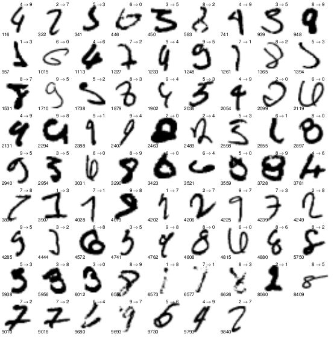
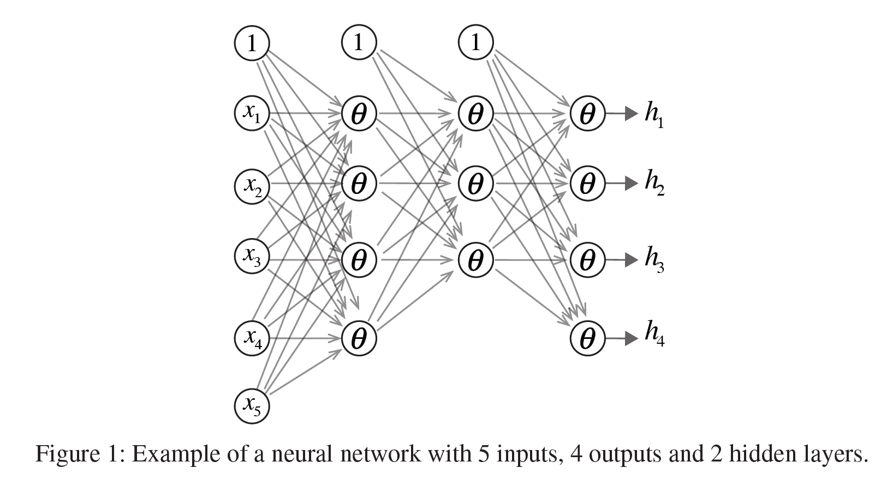
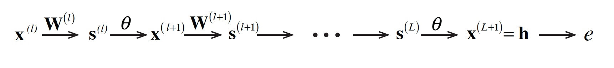
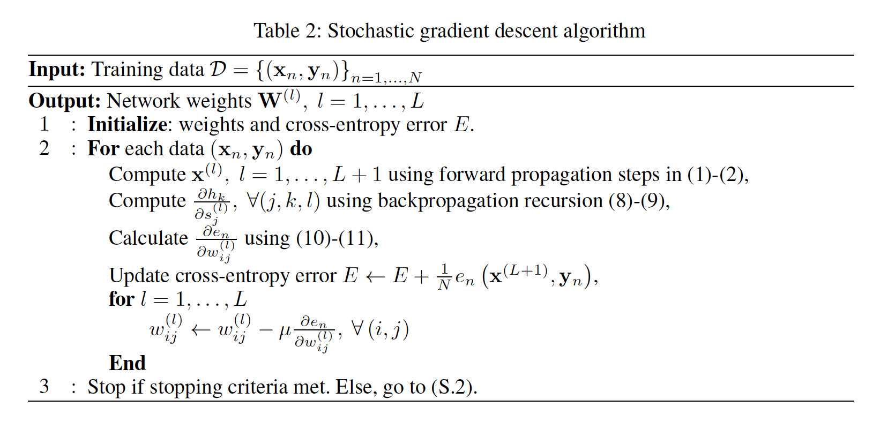
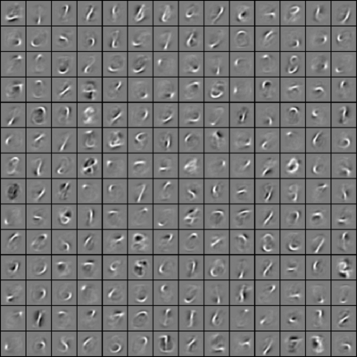
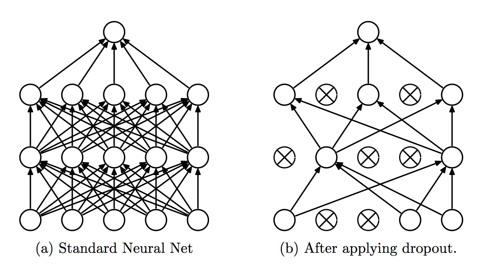
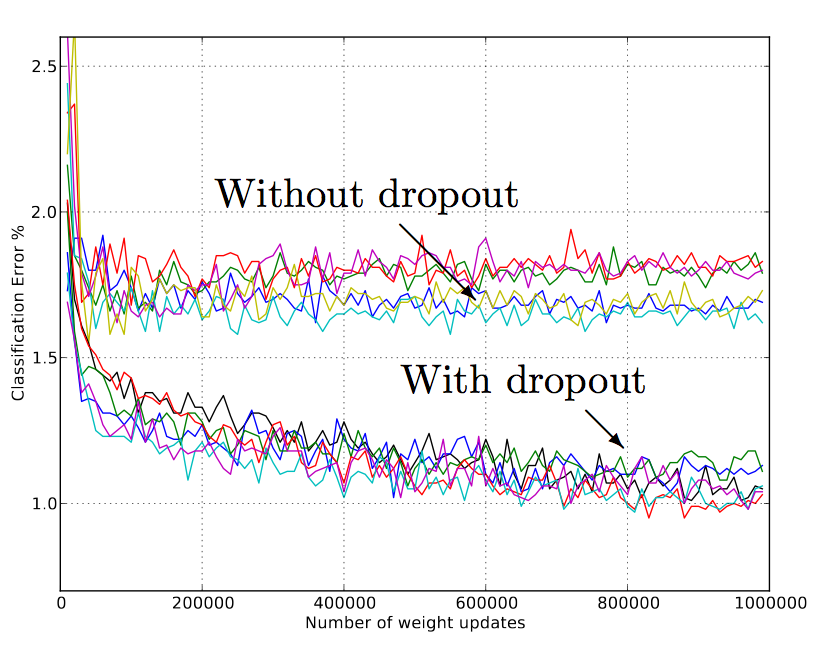

Deep Learning for Image Classification
Finding good features is an important yet challenging task in most machine learning applications. For computer vision tasks, deep learning techniques, based on multi-layer neural networks, are effective in extracting good learning representations from image data. Although powerful, deep neural networks are prone to overfitting. In this project, I studied different regularization techniques that mitigate overfitting. Precisely, I present the basic model of feed-forward neural networks. Next, I will present the procedures for fitting the network to the training data. In particular, the backpropagation algorithm, which is used to compute the network weights, is derived for the case of multi-label classification. Next, we will show how different optimization procedures can be built on top of the backpropagation algorithm to minimize the training error. In addition, a prototype neural network library is implemented in the Julia programming language and applied to image classification of hand-written digits with the MNIST datasets. Note that classifying hand-written digits can be a difficult task for a machine. As shown below, it can be challenging to distinguish between a digit to another.

Deep Neural Networks
Neural networks are biologically inspired machine learning models that offer lots of flexibility in modeling a target function. It is composed of multiple layers of neurons and was shown to be a universal approximation[1]. It can be used for both regression and classification problems. Although flexible, neural network can easily overfit. Therefore, regularization techniques are needed to train neural networks. The focus of the project is to investigate different regularization techniques.
Feed-forward Neural Network Model
Let’s start by describing the architecture of the neural network. As illustrated in the following figure, it consists of \(L\) layers of connected neurons or units. The layers are index as \(l = 1, … ,L\), in which the first \(L − 1\) layers are hidden and the last layer \(l = L\) is the output layer.

The input data \(x = [1, x_1, … ,x_p]\), which has p raw features, enters the network from the leftmost units. It then flows through the network towards the output nodes on the right. Each layer \(l\) has \(d^{(l)}\) neurons and a bias node. The bias node outputs a constant value 1, which corresponds to an intercept term. On the other hand, a neuron transforms the input, also called activation, to an output using a nonlinear operation \(\theta\). The resulting output is called the activity of the neuron.
Except for the bias node, all nodes between two consecutive layers are connected by arrows. In particular, the arrow between node \(i\) of layer \(l\) and node \(j\) of the next layer multiplies the activity \(x^{(l)}i\) of layer \(l\) by the weight \(w(l){ij}\) and passes the result to node \(j\). All activities of layer \(l\) that goes into node \(j\) is combined to obtain the activation \(s^{(l)}_j\) as follows:
This later is then transformed to an activation that is passed to all nodes of the next layer:
By concatenating all activation inputs and outputs (including the bias nodes’), the above operations can be concisely described in vector notations:
For classification tasks, the dimension \(d^{(L)}\) of the network output vector \(x^{(L+1)}\) is equal to the number of class labels \(C\). In fact, \(x^{(L+1)}\) models the posterior probabilities that a sample belongs to each class given the feature data \(x^{(1)}\). To enforce that the outputs sum to one, we use the softmax activation function:
For the hidden layers, we instead use the hyperbolic tangent function:
Unlike x(L+1), the output vectors x(l) of the hidden layers all include a bias \(x^{(l)}_1 = 1\). Thus, \(x^{(l)}\) has \(d^{(l)} + 1\) elements for all \(l = 1, … ,L\). These moving parts of a neural network are summarized in the Table 1 and the chain of transformations from input to output is illustrated below:
In summary, a neural network is characterized by:
- the total number of layers
- the input and output dimensions
- the number of units at each hidden layer (i.e. layer between input and output)
- an activation function at each neuron or node
- a set of weights matrices that relate the input and output between layers.
In Julia, we can define a neural network by the following data type:
1 2 3 4 5 6 7 8 9 10 | |
Predicting the class of test samples

Given these parameters, the relationship between the inputs and the outputs of the network is determined by a process called forward propagation. When predicting the class label of a new test sample \(\mathbf{x} \) the corresponding outputs \(h_k(\mathbf{x}) = x^{(L+1)}_k\) \(k = 1, … C\) are calculated using the chain of transformations previously described. Implementing the prediction is very simple. All we need to do is to run the forward propagation algorithm with the new sample xnew:
1 2 3 4 5 6 7 8 9 10 11 12 13 | |
The implementation of forward propagation follows directly from the above equations as follows:
1 2 3 4 5 6 7 8 9 10 11 12 13 14 15 16 17 18 19 20 21 22 23 24 25 26 27 28 29 30 31 32 33 34 35 36 37 38 39 | |
Model fitting using backpropagation
Previously, we assumed that the neural network model is already trained, i.e. the set of weight matrices are pre-configured. But how do we set these weight matrices \(W^{(l)}, l=1,…,L\)? In the following, we answer that question using another procedure called backpropagation in conjunction with forward propagation. A related question is how big and how deep should the network be. Since, it is computationally prohibitive to find the optimal size and depth of the network, a good choice is conventionally found by trial-and-error. However, we will later present an efficient technique called dropout to generate and average the predictions of many network configurations. In this section, we will focus on finding the optimal weight parameter (w given a configuration and training data.
The next thing we need is an error measure for the multi-label classification task. Assuming the class conditional distribution of the training data is multinomial, we employ the negative likelihood as the error function:
where \(x_n\) is a feature input vector and \(y_n\) is a \(C\) by \(1\) vector that encodes the class label using one-of-C rule. The function \(h\) is parameterized by the weights \(w\). In (4), we can identify \(E\) as a cross-entropy error function that measures the “distance” between the estimated MAP (Maximum-a-Posteriori) probabilities \(h(x_n;w)\) and the true label vector \(y_n\).
The error surface \(E\) is not convex w.r.t. the weights \(w\). Nonetheless, its derivatives are still useful for finding directions towards a good local optimum. In fact, finding the global optimum is not only computationally prohibitive here, but also it can be harmful. We will discuss more about this issue later and emphasize the importance to stopping our search early to avoid overfitting. In any case, we always need a way to cheaply compute all partial derivatives. Fortunately, there is a clever algorithm, called the backpropagation [3] that does it with \(O(M)\) runtime complexity. Here, \(M\) is the total number of weights in the network.
The implementation of the model training or fitting function is shown below:
1 2 3 4 5 6 7 8 9 10 11 12 13 14 15 16 17 18 19 20 21 22 23 24 25 26 27 28 29 30 31 32 33 34 35 36 37 38 39 40 41 42 43 | |
Basically, the training is performed after multiple iterations of both the forward and backward propagations. Through these rounds, the neural network is trained to model the right relationship between the input and the output. The backward propagation computes the sensisitivy matrices \(\Delta\) as follows:
1 2 3 4 5 6 7 8 9 10 11 12 13 14 15 16 17 18 19 20 21 22 23 24 25 26 27 28 29 30 31 32 33 34 35 36 37 | |
Optimizing the network weights
After the sensitivity matrices are calculated by the weight matrices, the weight matrices are optimized. There are two general strategies for doing this:
- Batch gradient descent update the weights using the gradient of the error contributed by all training examples. This is done after a single pass through all the examples.
- Stochastic gradient descent (SGD) is a more efficient method as it immediately updates the weights after seeing each training example[4]. Another advantage of the stochastic approach is that it takes advantage of randomization to escape poor local optimum. The overall SGD algorithm is presented in Table 2.

Different acceleration techniques have also been proposed to speed up the training procedure of neural networks. These include Nesterov’s method, conjugate gradient descent (which only works for batch mode) as well as Newton-type methods. Due to the computational hurdles with training large neural networks, first-order methods such as SGD are more practical. The implementation of simple SGD method is displayed below:
1 2 3 4 5 6 7 8 9 10 11 12 13 14 15 16 17 18 19 20 21 22 23 24 25 26 27 28 29 30 31 32 33 34 35 36 37 38 39 40 41 42 43 44 45 46 47 48 49 50 51 52 53 54 55 56 57 58 59 60 61 62 63 64 65 66 67 | |
What is most attractive about deep learning models is that they learn the feature automatically. In constrast, classic supervised model such as logistic regression or classification trees require the user to select the features. In neural networks, the features are represented by the states of the neurons in the hidden layers. For the digit classification application, the figure below shows such learned features.

Regularization techniques
Neural networks offer a considerable flexibility to the extent that they can approximate any function with abritrary complexity. However, they can also easily overfit the data and fail to generalize to give accurate predictions when presented with new data samples. To prevent this, we can use three types of regularization methods: weight decay, early stopping and dropout.
Weight decay
Weight decay is a classic regularization technique [5] that is used in different problems, including linear ridge regression. The basic idea is to penalize models that are too complex by adding a quadratic penalty terms to the error loss function and the weight update becomes: Precisely, it seeks to shrink the weights towards zero.
Early stopping
The second regularization method avoids overfitting using a validation set approach. Precisely, we monitor the prediction error of the validation set at each iteration of the weight optimization. Although the optimization seeks to minimize the training error, we stop as early as the validation error increases with the iterations. This is a good indication that the model starts to overfit.
Dropout
Dropout is another regularization technique that was recently proposed in [6]. The key idea is to randomly drop the units during training with a probability p. When a unit is dropped, all its incoming and outgoing connections are also temporarily removed. For each training point, we sample the network by droping units randomly to produce a “thinned” network. This is usually done within a mini-batch and the weight of each arrow becomes average over the points in the mini-batch. If for one point, the unit connecting the arrow was dropped, its weight counts as zero. At test time, the entire network is used but the weights are scaled by the probability p.

Simulation results show that the use of dropout to regularize the network help against overfitting. The out-of-sample classification can be reduced to 1% with dropout on the MNISTN dataset as shown in the figure below.

References
- R Ramamonjison. Training deep neural networks for multi-label classification, UBC Tech. Report, 2014.
- K Murphy. Machine Learning: A Probabilistic Perspective. The MIT Press, 2012.
- C Bishop. Neural Networks for Pattern Recognition. Oxford University Press, Inc., New York, NY, USA, 1995.
- D Rumelhart, G E Hinton, and R J Williams. Learning representations by back-propagating errors. Nature, 323(6088):533–536, 1986.
- L Bottou. Stochastic gradient learning in neural networks. In In Proceedings of Neuro-Nimes. EC2, 1991.
- A Tikhonov. Solution of incorrectly formulated problems and the regularization method. Soviet Math. Dokl., 4:1035–1038, 1963.
- N Srivastava, Geoffrey Hinton, Alex Krizhevsky, Ilya Sutskever, and Ruslan Salakhutdinov. Dropout: A simple way to prevent neural networks from overfitting. Journal of Machine Learning Research, 15:1929–1958, 2014.
- M Schmidt, N Le Roux, and F Bach. Minimizing finite sums with the stochastic average gradient. CoRR, abs/1309.2388, 2013.